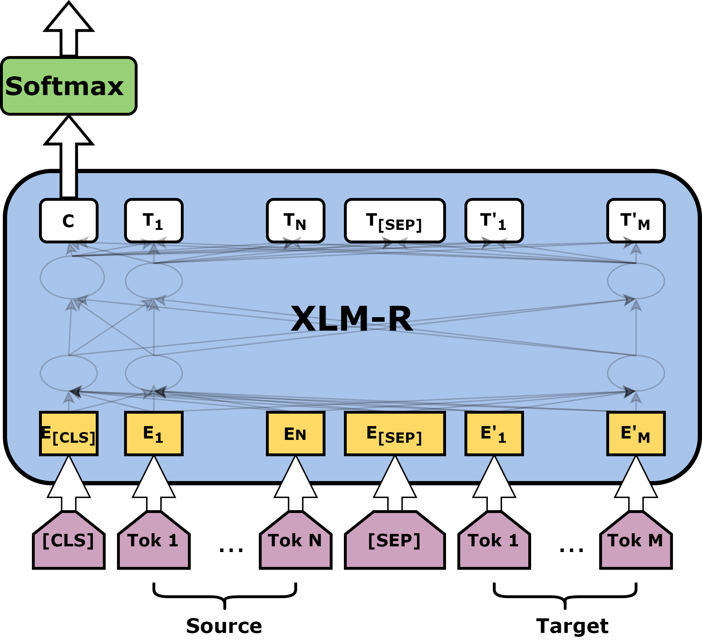
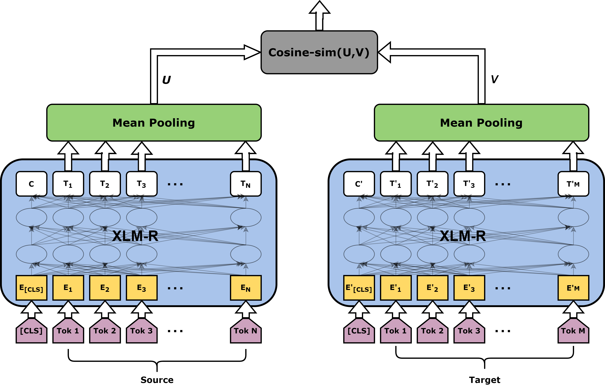

We have introduced two architectures in the TransQuest framework, both relies on the XLM-R transformer model.
MonoTransQuest
The first architecture proposed uses a single XLM-R transformer model. The input of this model is a concatenation of the original sentence and its translation, separated by the [SEP] token. Then the output of the

Minimal Start for a MonoTransQuest Model
First read your data in to a pandas dataframe and format it so that it has three columns with headers text_a, text_b and labels. text_a is the source text, text_b is the target text and labels are the quality scores. Then initiate and train the model like in the following code. train_df and eval_df are the pandas dataframes prepared with the above instructions.
An example transformer_config is available here.. The best model will be saved to the path specified in the "best_model_dir" in transfomer_config. Then you can load it and do the predictions like this.
Predictions are the predicted quality scores. You will find more examples in here.
SiameseTransQuest
The second approach proposed in this framework relies on a Siamese architecture where we feed the original text and the translation into two separate XLM-R transformer models.
Then the output of all the word embeddings goes through a mean pooling layer. After that we calculate the cosine similarity between the output of the pooling layers which reflects the quality of the translation.

Minimal Start for a SiameseTransQuest Model
First save your train/dev csv files in a single folder. We refer the path to that folder as path in the code below. You have to provide the indices of source, target and quality labels when reading with the QEDataReader class.
An example siamese_transformer_config is available here.. The best model will be saved to the path specified in the "best_model_dir" in siames_transfomer_config. Then you can load it and do the predictions like this.